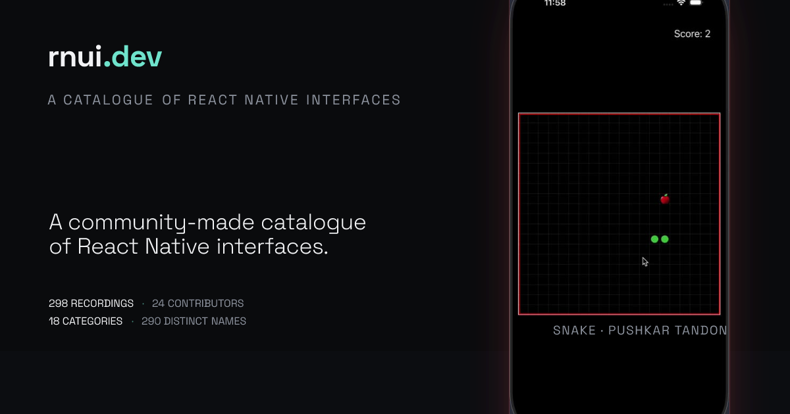
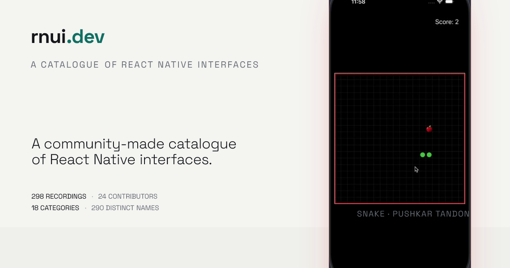
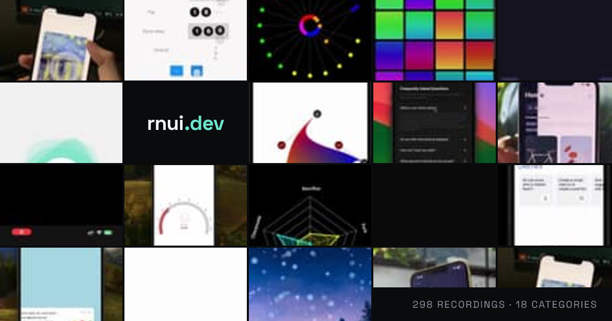
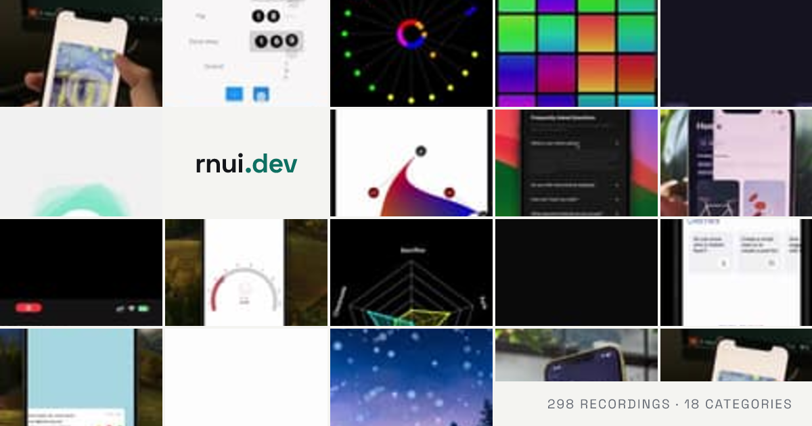
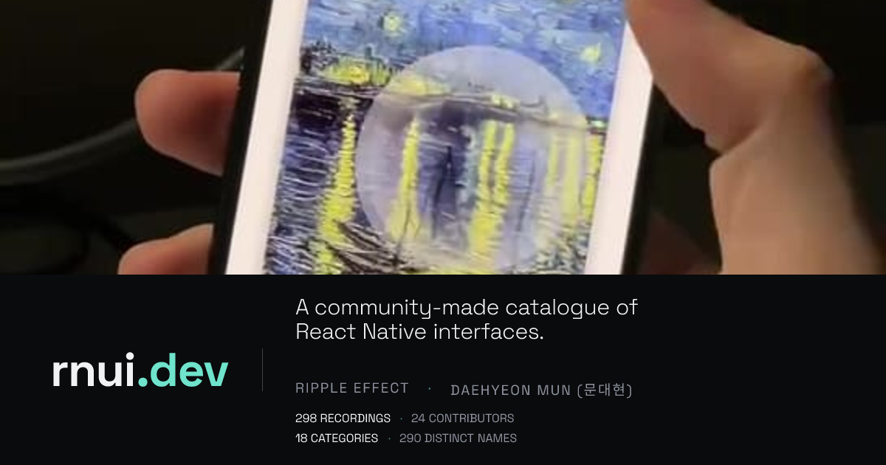
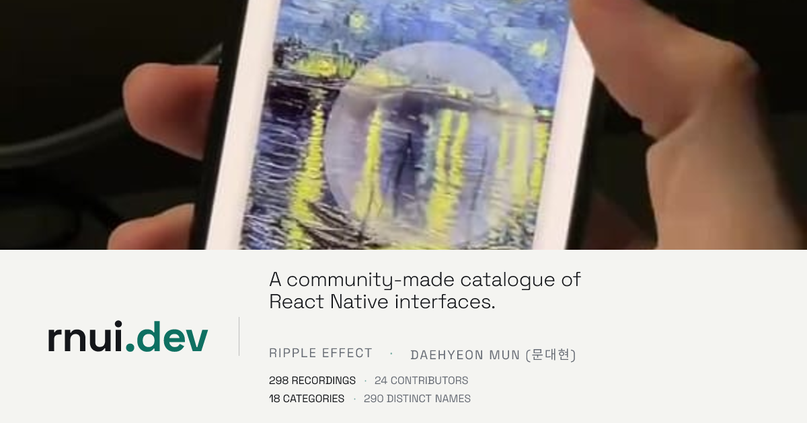
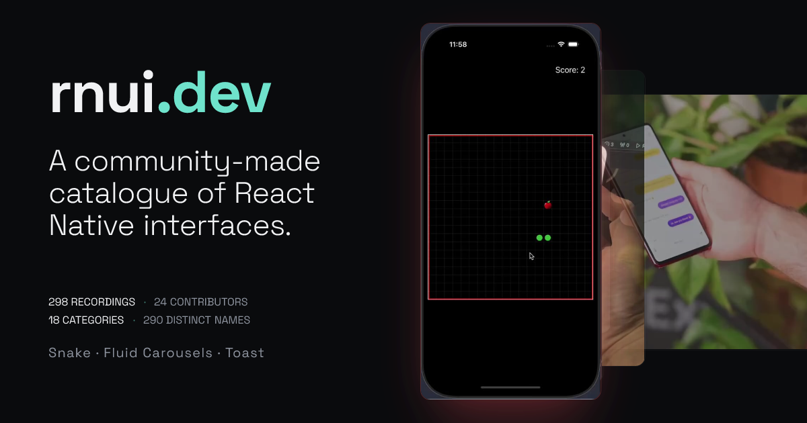
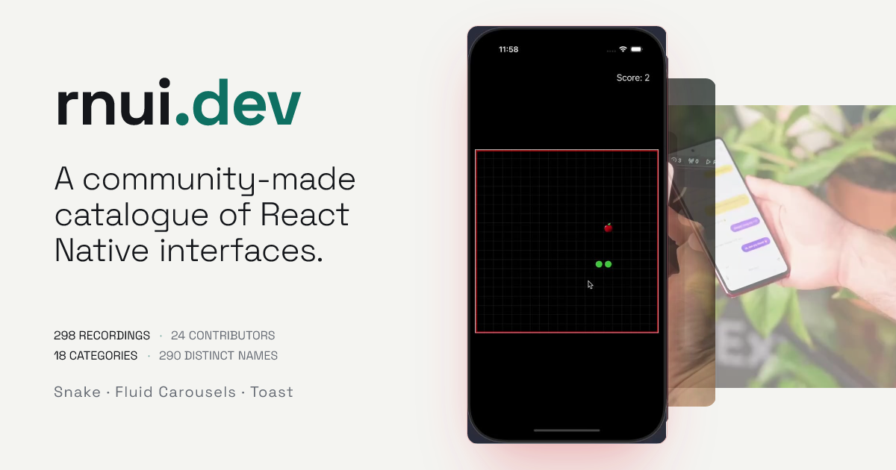
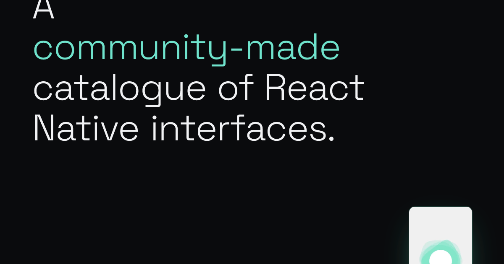
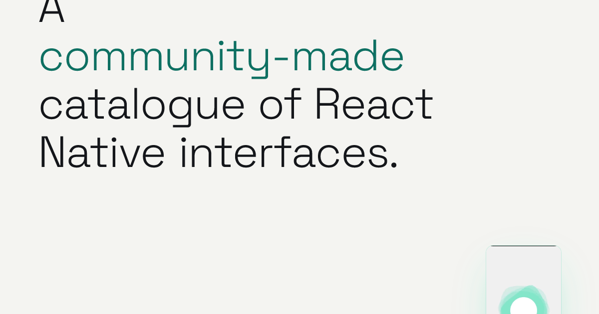
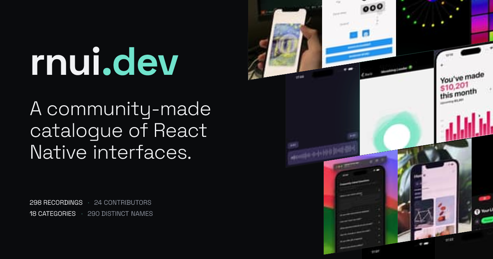
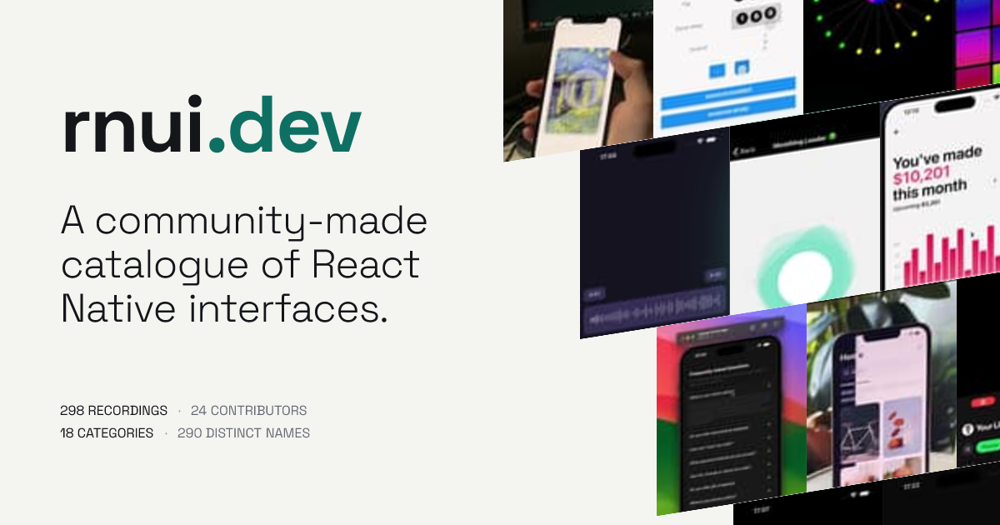
SCALE — one Poster at 700px, uncropped, big enough to actually read the UI
SUBORDINATION — a 20-frame contact sheet with rnui.dev typeset inside it as one cell
THE CROP — one Poster blown to 1200px and cut to a 3:1 band, on purpose
DEPTH — six different Posters receding like a feed
TYPE AS IMAGE — no grid at all; the claim at 132px carries the card
COMPLETENESS — the ramp committed: 180px tiles edge to edge, no gaps